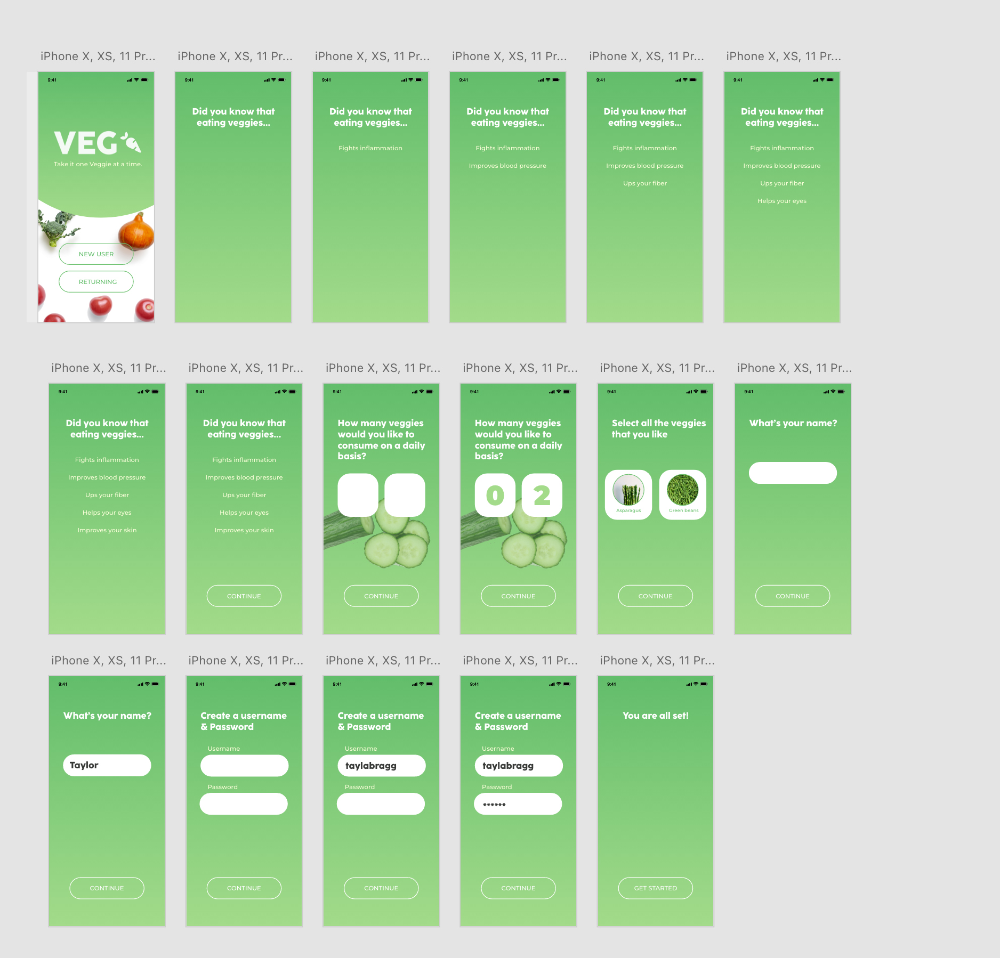
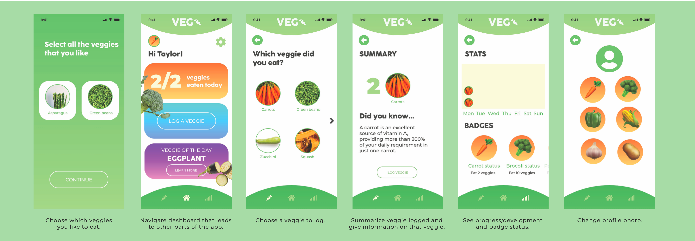

Summary
What did you make? Why did you make it?
Who does it serve?
Veg is an app that encourages users to get in a habit of eating
vegetables. I made this app based off of my interview with Taylor.
She described how she wanted to build a habit of eating more
veggies. This app serves as a veggie tracker and encourages users to
get their veggies in.
Problem
What problem does it address?
(This could be an internal trigger.)
Many young adults and several other age group lack eating foods
with nutritional value and health benefits. This app addresses that
problem by creating a solution for beginners.
Solution
How does the app address the problem
through its design and functionality?
The Veg app makes it easy to create a habit of eating vegetables.
The user interface is relaxing, fun and engaging to encourage
users to eat their veggie goal. The interface is easy to use and
offers rewards when veggies are logged. There are also statuses to
keep the user motivated and invested.
Target User
Who is your user? What is the issue they would like to address?
What details would help you approach your app design?
The target user for Veg is a college student who lacks eating
meals with any sort of nutritional value that is looking to improve
their health by taking a small step in the right direction.

Process
Research
What apps did you look at? What did you read? What did you take
away from these resources and bring into your project?
Since the target audience for my app is college students, I
looked up the most popular wellness apps for college students and
based some of the user interface off of that. College students
have no patience and a short attention span when it comes to
waiting on something to load or if they get frustrated by the app.
User Interviews
Summarize your interview(s) – What did you ask?
What did you learn to inform the idea for your concept?
During the interview process, I asked Taylor what she wanted to
improve on and if she had a long term goal. She was very
specific in the fact that she wanted to eat more vegetables because
she does not get enough in her diet due to the busy "college
life". I asked her what sort of things she would like to see on
the app and she liked the idea of having only your favorite
veggies displayed, a badge system to encourage her, and to make it
aesthetically pleasing.
Low Fidelity Wireframes and User Flow
Visual Design
Prototype
Onboarding section to gain information about the new user.
Dashboard that allows users to easily navigate throughout the app.
Reflection
Challenges
What was difficult about this project? What were some obstacles?
I had health problems throughout this project so time management
was my biggest obstacle. I thought the prototyping was the most
difficult because it was hard to keep track of artboards.
Successes
What works about the design? What are you most proud of?
I am honestly just proud I even got this done. As far as the
design aesthetic, I think it works well for the target audience. I
think that this app is something the target audience would actually
use.